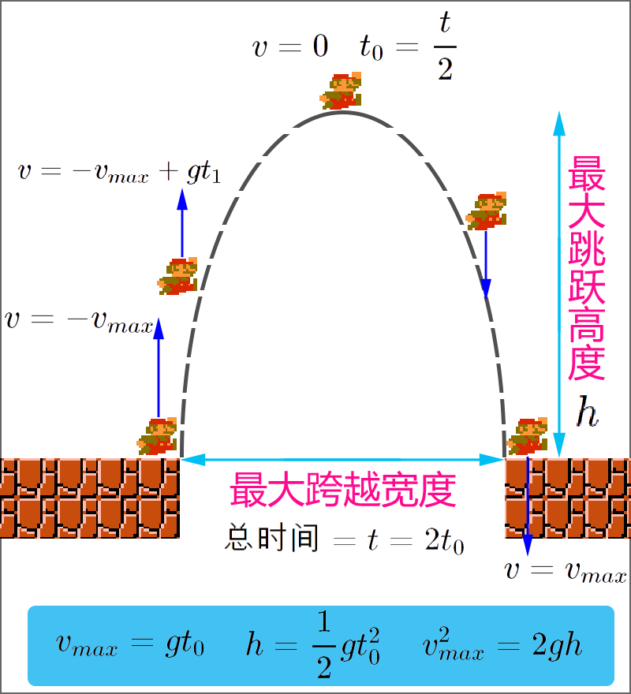

Godot3游戏引擎入门之十三：实现玩家的跳跃功能并完成一个平台小游戏（上）

一、前言
2019 好久不见！终于见面！首先必须得提到一个好消息： Godot 3.1 Beta1 已经发布啦！这是新版本开发过程中的第一个 Beta 版，后续开发进程应该会加快，据我“夜观天象”，我们最快可能会在春节期间与 Godot 3.1 正式版见面！ :joy:
然而，对，还有一个然而，在我这三天的文章编写期间，第二个 Beta 版本也紧凑的发布了！看来开发速度已经是越来越快，距离正式版的发布也是指日可待了，强烈推荐大家使用最新发布的 Beta2 版本进行游戏开发，下载链接地址： https://downloads.tuxfamily.org/godotengine/3.1/beta2/ 。
言归正传，本文是我新年里的第一篇文章，也是我准备了很久的第三个入门小游戏：平台小游戏。加上我之前的文章里介绍过的两个小游戏：金币收集小游戏和太空射击小游戏，总算是完成了 Godot 入门教程系列文章的第三种类型不同的游戏了。平台游戏是我们平时在 2D 游戏中非常常见的一种类型，在上一篇文章中我已经介绍了 Godot 中对于平台游戏的一些引擎内置的实用方法和相关运行原理，本文将继续分上下两篇，结合上一节的内容，一起讨论完成这个游戏的开发与制作，在介绍之前，请务必确保自己已经掌握了上一节的相关内容：Godot3游戏引擎入门之十二：Godot碰撞理论以及KinematicBody2D的两个方法 。
OK ，我们开始吧，本次文章上下篇将要详细讲述的内容主要包括以下几点：
- 关于重力加速度的数学基础知识
- 简单的跳跃以及二次跳跃实现
- 精确到高度和跳跃距离的功能实现
- 游戏的主要场景与关卡、代码介绍（下）
- 几种敌人的设计和一些简单效果（下）
- 总结与前瞻（下）
主要内容：平台游戏中的跳跃实现
阅读时间： 15 分钟
永久链接： http://liuqingwen.me/blog/2019/01/17/introduction-of-godot-3-part-13-the-player-jump-implementation-and-make-a-platform-game-part-1/
系列主页： http://liuqingwen.me/blog/introduction-of-godot-series/
二、正文
本篇目标
- 重力加速度相关数学知识
- 简单的跳跃功能实现
- 精确高度和跨度的跳跃实现
- 二次跳跃等小功能的实现
基础数学理论
在游戏开发中，我们不可避免地会接触到一些数学知识，比如矢量运算、矩阵操作、冲量动量等，听上去有点“高大上”，但实际上我们要做的确很少，因为游戏中涉及到的一些复杂的物理模型的数学分析，已经在游戏引擎的框架底层中都默默实现包装好了，比如碰撞图形的检测、图像材质的渲染、复杂的矩阵运算等等，而我们需要做的都是一些最基本的操作或者方法的应用，所以即使是初学者也无需有任何担心疑虑！当然，掌握一些基本的数学理论知识，能够让我们在游戏开发中得心应手、有章可循！
平台游戏中经常会涉及到一些关于重力加速度和速度相关的数学理论知识，所以让我们首先一起来回顾一下物理学中有关自由落体运动的数学概念。这些数学概念并不复杂，主要是一些简单的数学公式，相信大家都学习过，现在一起来温习一下吧！ :smiley:
首先是最基本的加速度公式： $$v_t = v_0 + at$$ 对于自由落体，物体的初始速度 \(v_0 = 0\) ，加速度 \(a = g\) 为重力加速度，那么在平台游戏中，玩家从地面跳跃到最高位置也就是自由落体的反向运动：速度从最大速度 \(v_{max}\) 减到最小速度 \(v_{min} = 0\) 。我们可以得出从地面上升到最高点时所经历的时间为： $$t = \frac{v_{max}}{g}$$ 到达最高点后玩家开始下落，整个跳跃过程分上升和下落两部分，总时间即上升的时间和下落的时间总和，这两个时间是相等的，所以玩家跳跃后腾空的总时间为： $$t_总 = 2 \cdot \frac{v_{max}}{g}$$ 如何计算玩家跳跃后达到的最大高度呢？通过时间和重力加速度可以算出来，公式如下： $$h_{max} = \frac{1}{2}gt^2$$ 游戏中重力加速度可能是未知的，如果我们设定了玩家能跳跃的最大高度 \(h_{max}\) 以及玩家在空中的总时间 \(t_总\) ，那么我们就可以由上述公式可以得出游戏中实际的重力加速度大小： $$t = \frac{t_总}{2}$$ $$g = \frac{2h_{max}}{t^2}$$ 通过上面的两个公式我们能得出玩家起跳和落地时的最大速度（方向不同而已）： \(v_{max} = gt\) ，除此之外，我们也可以根据玩家跳跃的最大高度以及重力加速度来推算出玩家的最大速度： $$v = gt = g\sqrt{\frac{2h}{g}} = \sqrt{2gh}$$ 这里 \(v\) 代表最大速度，即 \(v_{max}\) ， \(h\) 代表最大高度，即 \(h_{max}\) 。
以上是枯燥的理论知识！回到游戏中来，游戏场景中的玩家就是我们要操作的对象，而游戏场景就是一个具有重力加速度和地面的小世界，在任何时刻玩家都会有一个向下的重力加速度，如果没有障碍物玩家就会一直往下掉，所以我们需要添加静态碰撞体作为地面阻止玩家继续掉落，这个时候重力加速度虽然一直存在，但是玩家在竖直方向的速度因为地面而变为 0 ，如果我们给玩家一个向上的初始速度，那么他就可以往上跳跃了。

但是，玩家不会无止境地往上升，因为受到向下的重力加速的影响，最终玩家的速度会降为 0 ，此刻也是他所到达最大高度的时刻，接下来就是往下落直到地面为止。这就是一个完整的跳跃过程，那么我们如何在代码中实现呢？又如设置合理的重力加速度和跳跃速度呢？接下来我们一一讨论并解决这些问题！
简单跳跃实现
首先我们来实现最简单的平台跳跃功能！根据上面的思路，分为以下几个步骤：
- 第一步，在每一帧玩家都会有一个向下的重力加速度，也就是
velocity.y += gravity，让它的垂直速度不断增加 - 第二步，移动玩家，因为与地面的碰撞玩家的垂直速度会变为 0 ，更新速度：
velocity = move_and_slide(velocity, FLOOR_NORMAL) - 第三步，当玩家在地面上开始跳跃时，给玩家一个瞬间的向上的速度即可！
根据上述步骤，我们编写代码来实现玩家跳跃，这里一定要注意速度是有正负之分的：
1 | extends KinematicBody2D |
代码和逻辑都很简单，这就是最简单直接的玩家跳跃功能实现，代码中关于 move_and_slide() 以及 is_on_floor() 方法的使用介绍可以参考我的上一篇文章：Godot3游戏引擎入门之十二：Godot碰撞理论以及KinematicBody2D的两个方法。
其中有三个重要的参数，参数的值在每个游戏中都不一样，同一个游戏也可以有不同的设置：
moveSpeed水平移动速度，这个数值很好设置，结合动画感觉合理就可以jumpSpeed垂直跳跃的初始速度，设置过大会导致跳跃过高，而太小则没有跳跃效果gravity重力加速度，设置过大导致跳跃时间很短且水平跨度很小，过低则导致漂浮
你可能会想，是不是只要调整一下 jumpSpeed 和 gravity 这两个参数的值就好了呢？其实不然！这两个值固然重要，是控制跳跃高度和腾空时间具体效果的关键，但是进一步想想，如果你需要通过跳跃跨过一段峡谷，从起跳到落地的时间，也就是空中的时间过短的话，那么你的移动速度必须足够大才能成功跨过去；如果你在空中的时间过长，那么要成功跨越一段峡谷，你的速度就必须设置很小。看来这三个参数是相辅相成的，调整一个参数必然会引起其他参数的变动！嗯……
那么如何解决这个问题呢？——别急，自然有办法，因为远在 17 世纪，牛顿就已经帮我们解决了，哈哈！ :grin:
精确的实现方法
精确的实现，我们需要协调一些重要参数，具体的思路是这样的：首先设置最大的跳跃宽度，以及最大的跳跃高度，有了这两个值，还不够，我们还需要一个时间，即你跨过最大跨越宽度的总时间，这个时间也是玩家在空中上升和下落过程经历的总时间，这个值其实很好捕捉，凭感觉就行，举个例子，在经典小霸王游戏超级玛丽中的主角的最大跳跃高度是 4 个砖头，最大跨越宽度也是 4 块砖，跨越最大宽度的时间大约 1 秒钟（凭我 20 多年前的记忆猜测）。
这些参数设置说明如下：
- 跨越最大宽度时间：
jumpDuration = 2 * t，根据游戏场景凭感觉自由设置、调整，可以得出腾空的半程时间t = jumpDuration / 2 - 设置最大跳跃宽度：
maxJumpWidth = velocity.x * t设置了maxJumpWidth后可以算出水平移动速度moveSpeed = velocity.x - 设置最大跳跃高度：
maxJumpHeight = 1/2 * gravity * t * t这里maxJumpHeight设置后可以推算出重力加速度gravity - 计算跳跃最大速度：
maxJumpSpeed = gravity * t请注意速度的方向，起跳速度maxJumpSpeed在 Godot 中取值为负 - 如果只是已知跳跃高度和重力加速度，可以使用
v * v = 2gh的公式计算跳跃速度：v = sqrt(2 * gravity * jumpHeight)
这种设置方式就是我们要讨论的精确实现方法，设置相关变量，接下来在 _ready() 方法或者 _init() 方法中进行计算供后续代码使用，核心部分如下：
1 | extends KinematicBody2D |
代码还是非常简单，大部分保持不变，另外，我这里定义的常量 UNIT 表示单个瓦片地图尺寸，你可以根据自己的游戏场景或者瓦片地图进行对应的设置。还有一个注意点，我在设计最大跳跃宽度和最大跳跃高度的时候，大家应该注意到了，我并没有设置为整数个单元大小，而是会稍微留有一点余地，比如 4.25 * UNIT 而不是 4 * UNIT ，让玩家不会感觉跳上去很难。
添加一些功能
目前，我们只是完成了最简单的平台跳跃功能，我们需要更加丰富的游戏体验，更加合理的操作设计，让我们再添加一些其他基本功能吧！
- 二次跳跃：在空中进行第二次跳跃，你也可以设置多次
- 停止跳跃：玩家可以控制主角立即停止跳跃
- 最低高度：跳跃的最低高度实现
- 缓冲方案：让起跳和移动不那么唐突
- 真空死亡：防止无限降落的 BUG
- 爬梯子：在梯子上玩家能够上下移动
小功能虽多，但实现这些小功能的思路并不复杂。对于二次跳跃，当玩家腾空后，也就是允许玩家进行第二次跳跃，这里的二次跳跃一般是不允许无限跳跃的，所以我们需要添加一个条件用于判断是否已经发生了二次跳跃： ! isSecondJumping && ! self.is_on_floor() ，同时，记得在玩家着地后把标记的值进行重置 isSecondJumping = false 即可。
在有的游戏中玩家一旦触发跳跃就会直接跳跃到最大高度，不过这并不是我们所需要的，我们希望玩家可以随时停止跳跃：按下跳跃键起跳，松开跳跃键立即停止！这样玩家就会有一定的跳跃空间可操作，对于平台游戏体验来说还是不错的。停止跳跃功能实现起也不难，我们唯一要做的是监听按键的 released 松开事件并作出相应的处理即可：
1 | func _input(event): |
但是这会出现第三个问题：如果按键松的太快你会发现玩家好像没有发生过跳跃似的，这样是不是有点太唐突了？嗯，我们应该给玩家一个最小的跳跃高度，也即是说，如果玩家在跳跃上升过程中直接把速度设置为 0 是不行的，相反，我们应该给他一个最小速度： minJumpSpeed ，这个所谓的最小速度和之前的最大速度一样可以使用公式通过已知的最小高度值来计算得出。唯一要注意的是：下降过程是不能操作的！
注意，严格来说这里的最小高度术语有误！实际上是在满足玩家没有达到最小速度之前我们就松开了按键，这时我们需要给玩家一个最小的向上跳跃速度而已！这样玩家跳跃的实际高度肯定会超出最小高度！大家可以揣摩体会一下，当然这个设置对游戏来说这并没有什么伤害。
1 | var minJumpSpeed = 0.0 # 最小跳跃速度，注意是负数！ |
一些注意点我已经在代码的注释中说明了，注意判断玩家当前跳跃是否为二次跳跃，以及垂直运动的方向是往上还是落下的过程，另外， minJumpSpeed 也是一个负值！
至于第四个和第五个小功能就非常简单了，真空死亡的意思是：如果测试过程中你的地图不小心出现某个漏洞，比如玩家从某个角落跳出了地图的范围，那么他就会因为受到重力加速度的影响导致垂直下落的速度一直增加到无限大（浮点数最大值），这其实已经是 Game Over 了，我们可以在代码中添加一个最大速度值，当玩家超过这个速度直接让游戏结束或者重新开始即可。
对于缓冲方案，这是一个可有可无的部分，只需要一个函数即可搞定： float lerp(float from, float to, float weight) 也就是线性插值计数器，比如我们让玩家移动的时候直接把速度赋值给玩家的移动速度就会有点“鲁莽”，玩家的速度应该从 0 然后快速增长到 moveSpeed 这样会更加合理，这就是插值函数的作用了，在 Unity 中你会发现它的使用更加广泛且常见。
最后一个，对于梯子上的玩家上下移动效果，与水平移动实现起来并没有很大的差别，我们只需要注意梯子上玩家是没有重力加速度的关键点即可：进入梯子清除重力加速度，离开梯子添加重力加速度。具体实现参考代码吧！
辅助效果和所有代码
我们的玩家跳跃功能已经全部实现了，剩下的是一些辅助特效了。
- 第一个肯定是添加播放合理的动画效果
- 第二个是音效了，比如跳跃音效，攻击音效，受到伤害的音效等
- 第三个是玩家受伤害时的屏幕震动特效等
- 当然，你可以添加更多的效果，比如灰尘粒子等……
好了，这么多理论，堆砌到一起，最后看下我们的核心代码吧：
1 | # 省略代码…… |
以上是主要代码部分，建议到我的 Github 仓库克隆源码参考，仓库地址： https://github.com/spkingr/Godot-Demos ，最终的游戏效果：

三、总结（上）
这是 2019 年的第一篇文章，理论加代码有点超出篇幅了，也陆陆续续花了我不少零零碎碎的闲余时间，希望大家能够从中学到一些知识吧，后续文章我也会努力保持更新速度！
好了，总结一下本文的相关知识：
- 基本的重力加速度相关数学知识
- 简单的跳跃功能实现
- 精确高度和跨度的跳跃实现
- 二次跳跃功能的实现
- 其他功能的实现
本篇涉及到的 Demo 以及相关代码已经上传到 Github ，地址： https://github.com/spkingr/Godot-Demos ， 原创不易，希望大家喜欢，有疑问多多交流与讨论，随时给我留言！ :smile:
我的博客地址： http://liuqingwen.me ，我的博客即将同步至腾讯云+社区，邀请大家一同入驻： https://cloud.tencent.com/developer/support-plan?invite_code=3sg12o13bvwgc ，欢迎关注我的微信公众号：